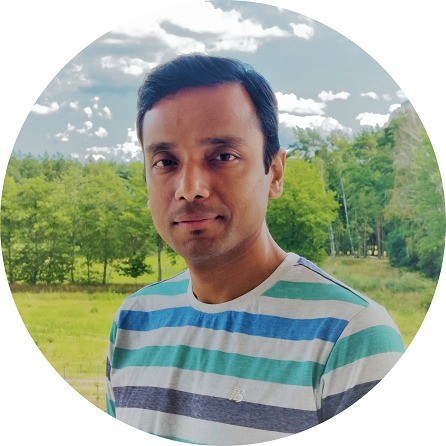

Nishanta Banik
Education:
- BSc Chemistry, Cachar College, Assam, India
- MSc Bioinformatics, Sikkim Manipal University, India
Work experience:
-
Senior Cloud DevOps Engineer (01/2024 – 03/2024): Finoa Gmbh, Berlin, Germany.
Project: Finoa Gmbh, a leading digital asset custody and financial services
provider, caters to clients worldwide, ensuring the security and accessibility of
their digital assets. As a Senior Cloud DevOps Engineer, collaborated within a
dynamic team to support and enhance Finoa's infrastructure, deploying and
optimizing cloud-native solutions on AWS and GCP. Implemented robust CI/CD
pipelines, orchestrated containerized workloads with Kubernetes and
continuous monitoring.
Technologies used: Google Cloud | AWS | Terraform | Azure DevOps |
Elastic Cloud | Prometheus | Kubernetes | Helm | ArgoCD
-
Senior Cloud DevOps Engineer (05/2023 – 08/2023): Symmedia Gmbh, Bielefeld, Germany.
Project: Symmedia GMBH is a technology company providing digital
solutions for Enterprise IoT, data, and microservice applications. with 1000
client companies with presence over 60 countries.
Worked as a Cloud DevOps Engineer in a team of 6, supporting large-scale
Enterprise IoT, data solutions, and microservice applications using Google
Cloud Platform (GCP) and Microsoft Azure. Implemented GitOps &
Continuous Deployment strategies, Infrastructure as Code (IaC). My efforts in
enhancing cloud security through DevSecOps features & monitoring,
observability, logging further contributed to the overall success of the projects.
Technologies used: Google Cloud | Microsoft Azure | Terraform | Azure
DevOps | Elastic Cloud | Prometheus | Kubernetes | Helm | ArgoCD | Istio
-
Senior Cloud DevOps Consultant (09/2020 – 05/2022): Wipro Digital & Publicis Sapient, India.
Project: With a presence in over 60 countries and 1,000+ customers (Wipro),
over 50 countries and 500+ customers (Publicis Sapient), Wipro & PS Cloud
and DevOps division offer a wide range of services, including cloud migration,
cloud-native application development, DevOps automation, and cloud security.
My role held accountability in designing, building, and operationalizing
competitive large-scale enterprise data solutions and applications across GCP,
AWS, and Azure. Designed & scaled CI/CD and DevSecOps best
practices, conducted security assessments, and automated Cloud &
DevOps with flexibility. With a flexible approach and hands-on experience
in setting up Kubernetes (k8s) clusters, I improved workflow performance
by 28% and executed Cloud/DevSecOps Cost Control/Optimization
strategies, making a significant impact. This influence resulted in optimized
cloud spending, showcasing a blend of competitive and flexible strategies
for impactful outcomes.
Technologies used: MS Azure | AWS | Azure | Istio | Helm | Terraform |
AKS | Kubernetes | Azure DevOps | Github Actions | New Relic | Dynatrace
-
System Technical Consultant (01/2016 – 05/2020): Capgemini, Bangalore, India.
Project: Capgemini is a global leader in consulting, technology, and outsourcing
services including business transformation, cloud computing, digital
transformation & IT services, with over 5,000 client companies in more than 50
countries. As a cloud devops consultant, successfully led the migration of
applications from monolithic to microservices architecture on AWS, Azure and
GCP, resulting in 3m+ EUR annual savings for a major banking project.
Actively worked in establishing DevSecOps best practices, automated CI/CD
pipelines, testing, and observability.
Technologies used: AWS | Azure | GCP | Kubernetes | Terraform |
Jenkins | Datadog | Gitlab | Ansible | ELK Stack.
-
Technical Consultant (06/2011 – 12/2015): ISG Novasoft Pvt Ltd and Wipro Technologies.
Project: Worked as a technical consultant for ISGN and Wipro, automating
environment build and provisioning using virtualization, containerization,
orchestration tools with Docker, Vmware, AWS & Ansible. Also, implemented
DevOps solutions for a range of Agile projects, creating automated build,
deployment, monitoring & reporting solutions.
Technologies used: AWS | Ansible | Docker | Linux | Solaris | Windows
Server 2012 | VMware | Hyper - V | IIS | Active Directory.
-
System Engineer (01/2005 – 09/2011): Testing Planet, Collabera Technologies and R.K.D
College.
Project: Worked as a System Engineer for Testing Planet, Collabera
Technologies and R.K. Degree College of Technologies as Linux, Unix and
Vmware Admin automating tasks for in-house servers, managing storage and
backup devices
Technologies used: Linux | AIX | Solaris | Windows Server 2012 | VMware |
Hyper - V | Microsoft SharePoint Server 2010 | IIS | Active Directory.
Skills:
AWS (6 years of experience) | Google Cloud Platform (4) | Microsoft Azure (5) | GKE, AKS, EKS (3) |
Terraform (3) | Kubernetes (4) | Github (3) | Azure DevOps (4) | Docker (3) | Jenkins (5) | Ansible (3) |
Linux (5) | GitLab (2) | GitOps (2) | ArgoCD (2) | Terraform Cloud (1) | GitHub Actions (2) | Databricks (2) |
Azure IoT Hub (1) | Elasticsearch (3) | Prometheus (3) | Grafana (3) | Helm (2) | Kustomize (1) | Istio
(1) | Python (3) | Hadoop (2) | MySQL (3) | Golang (2) | Jira (5) | Agile (5) | DevSecOps (4)
Awards, certifications, or other achievements:
- Google Cloud Professional Cloud Architect (GCP-PCA)
- Microsoft Azure Architect Design (AZ-304)
- Microsoft Azure Architect Technologies (AZ- 303)
- Google Associate Cloud Engineer (GCP�ACE)
- Microsoft Azure AI Fundamentals (AI-900)
- Microsoft Azure Administrator (AZ-103)
- Microsoft Azure Fundamentals (AZ-900)
- VMware Certified Professional 5 – Data Center Virtualization (VCP510)
- Excellence in Cloud Security - Recognized at Sonova Digital for implementing robust security measures,
safeguarding sensitive data and earning accolades from external auditors.
- Outstanding Contribution to Cloud Migration (Wipro Digital & Publicis Sapient): Honored for spearheading large-scale
enterprise data migrations across multiple cloud platforms, delivering substantial cost savings and operational efficiencies.
- Excellence in Cloud Cost Optimization - Awarded at Wipro Digital for implementing strategic cloud cost optimization
measures, resulting in €590k in savings and a 32% improvement in workload performance within a year.
- Innovative Kubernetes Implementation (Capgemini): Acknowledged for innovative Kubernetes deployment strategies,
facilitating seamless container orchestration and management in complex environments.
- Continuous Learning Advocate - Appreciated at ISG Novasoft Pvt Ltd for fostering a culture of continuous learning
and skill development among team members, resulting in a 20% increase in technical proficiency within the department.
About Nishanta
My Google Cloud Portfolio!!
My DevOps Kubernetes Portfolio!!
Please Subscribe my YT Channel!!
Connect with Me!!